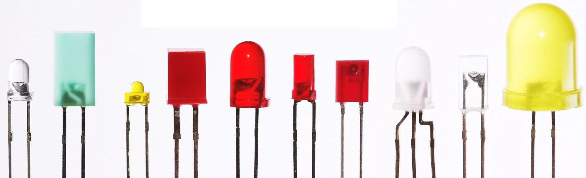
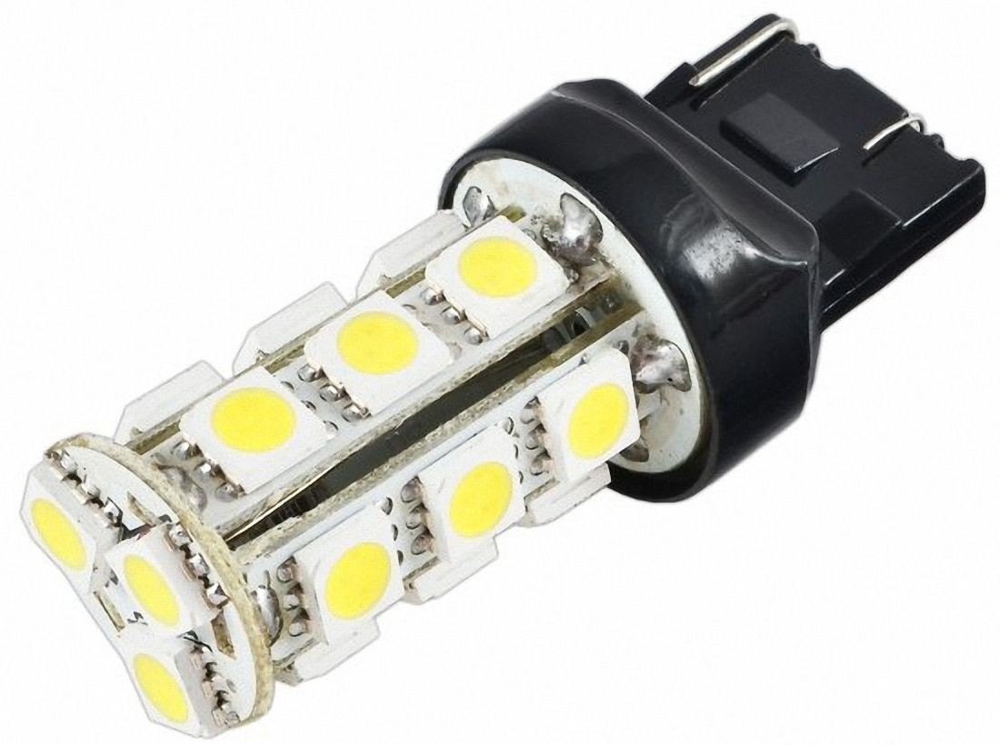
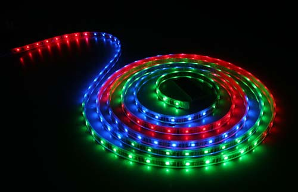
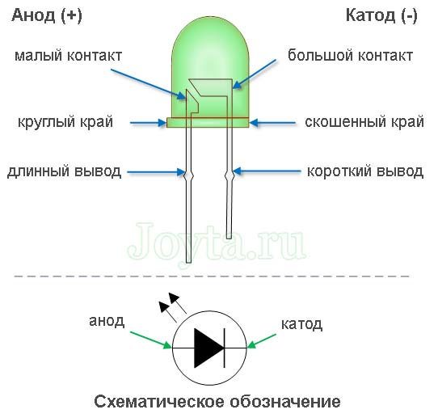
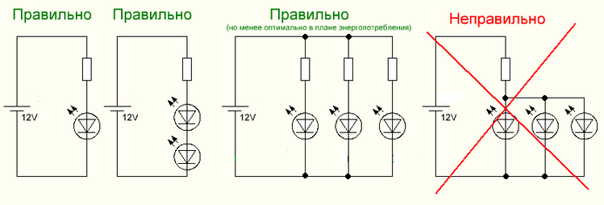
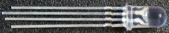
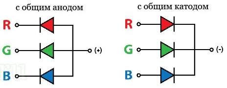
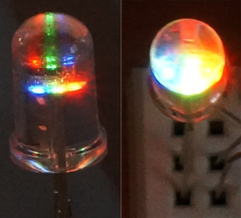
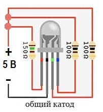
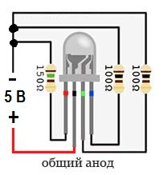

Светодиоды
Cветодиод (LED) представляет собой полупроводниковое устройство, излучающее свет при прохождении через него электрического тока. Свет возникает, когда частицы, несущие ток (известные как электроны и дырки) объединяются в полупроводниковом материале в зоне p-n перехода.
Поскольку свет генерируется в твердом полупроводниковом материале, светодиоды описываются как твердотельные устройства. Термин твердотельное освещение, которое также включает в себя органические светодиоды (OLED), отличает эту технологию освещения от других источников света, таких как лампы накаливания, галогенные лампы, флуоресцентные лампы.

Рис. 1 - Светодиоды

Рис. 2 - Светодиодная лампа

Рис. 3 - Светодиодная лента
Различные цвета светодиодов
Внутри полупроводникового материала светодиода электроны и дырки находятся в энергетических зонах. Ширина запрещенной зоны определяет энергию фотонов (частиц света), излучаемых светодиодом.
Энергия фотона определяет длину волны испускаемого света и, следовательно, его цвет. Различные полупроводниковые материалы с различными запрещенными зонами создают разные цвета света. Точная длина волны (цвет) могут быть настроены путем изменения состава светоизлучающей или активной области.
Светодиоды состоят из соединений полупроводниковых элементов из III и V группы периодической таблицы химических элементов Менделеева. Примерами таких материалов, которые обычно используются в производстве светодиодов, являются арсенид галлия (GaAs) и фосфид галлия (GaP).
До середины 90-х годов светодиоды имели ограниченный диапазон цветов, в частности, коммерческие синие и белые светодиоды не существовали. Разработка светодиодов на основе нитрида галлия (GaN) завершила палитру цветов и открыла множество новых устройств.
Основные материалы, используемые при изготовлении светодиодов
Основными полупроводниковыми материалами, используемыми для производства светодиодов, являются:
- InGaN: синие, зеленые и ультрафиолетовые светодиоды высокой яркости.
- AlGaInP: желтые, оранжевые и красные светодиоды высокой яркости.
- AlGaAs: красные и инфракрасные светодиоды.
- GaP: желтые и зеленые светодиоды.
Подключение светодиодов
Светодиоды имеют различные цвета и рабочие напряжения. Важной характеристикой светодиода является его номинальный ток. В зависимости от рабочего напряжения нам необходимо рассчитать резистор для светодиода, чтобы избежать повреждения светодиода большим током.
В электронных устройствах с напряжением питания 5 В для большинства маломощных светодиодов, как правило, резистора сопротивлением около 220 Ом вполне достаточно.
Светодиоды имеют полярность. Поэтому, чтобы светодиод светился, его анод должен быть соединен с плюсом источника питания, а катод с минусом. Обычно у светодиода ножка анода длиннее, чем ножка катода. К тому же, со стороны катода корпус светодиода скошен.

Рис. 4 - Устройство светодиодов
Не следует беспокоиться при ошибке в полярности подключения. Со светодиодом ничего не случиться, просто он не будет светиться. За исключением особого случая, когда вы подали очень большое напряжение.

Рис. 5 - Подключение светодиодов
RGB-светодиод
Полноцветный светодиод или по другому RGB-светодиод - Red (красный), Green (зеленый), Blue (синий). Смешивая эти три цвета в разной пропорции можно отобразить любой цвет. К примеру, если зажечь все три цвета на полную мощность (красный: 100%, зеленый: 100%, синий: 100%), то получится свечение белого цвета. Если зажечь только два (красный: 100%, зеленый: 100%, синий: 0%), то будет светиться желтый цвет.

Рис. 6 - RGB-светодиоды
Конструктивно, RGB-светодиод состоит из трех кристаллов под одним корпусом и имеет 4 вывода: один общий и три цветовых вывода.
RGB-светодиоды бывают:
1. С общим анодом (CA)
2. С общим катодом (CC)
3. Без общего анода или катода (6 выводов). Как правило в SMD-исполнении.

Рис. 7 - Структурная схема RGB-светодиода
Самый длинный вывод RGB-светодиода, обычно является общим (анодом или катодом).
При подключении данных светодиодов, следует учесть, что напряжение, подаваемое для свечения цвета может быть разным для разных цветов.
К примеру, возьмем 5 мм светодиод MCDL-5013RGB (I=20мА):
Ured = 2,0 В ,
Ugreen = 3,5 В,
Ublue = 3,5 В.

Рис. 8 - Свечение RGB-светодиода
Также следует отметить то, что для некоторых типов RGB-светодиодов необходимо использовать рассеиватель, иначе будут видны составляющие цвета.
Если у вас RGB-светодиод с общим катодом, то подключать его нужно по схеме на рисунке 9.

Рис. 9 - Схема подключения RGB-светодиода с общим катодом
Здесь мы видим, что три вывода подключаются через резисторы к источнику питания или к микроконтроллеру (например, Arduino), а четвертый вывод к минусу питания.
Для RGB-светодиода с общим анодом схема подключения показана рисунке 10.

Рис. 10 - Схема подключения RGB-светодиода с общим анодом
Следует обратить внимание, что нужно подключать сопротивления к каждому цвету, поскольку светодиоды работают с меньшим напряжением, чем выход микроконтроллера. Обычно для светодиода красного цвета достаточно резистора сопротивлением 150-180 Ом и 75-100 Ом для зеленого и синего цвета при напряжении питания 5 В.
Если таких сопротивлений нет, то используйте большее сопротивление.
Расчёт резистора для светодиода